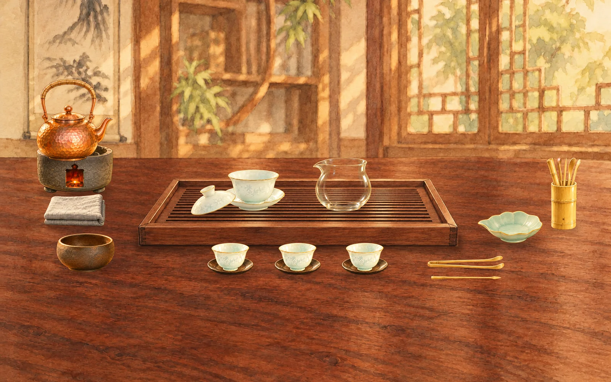
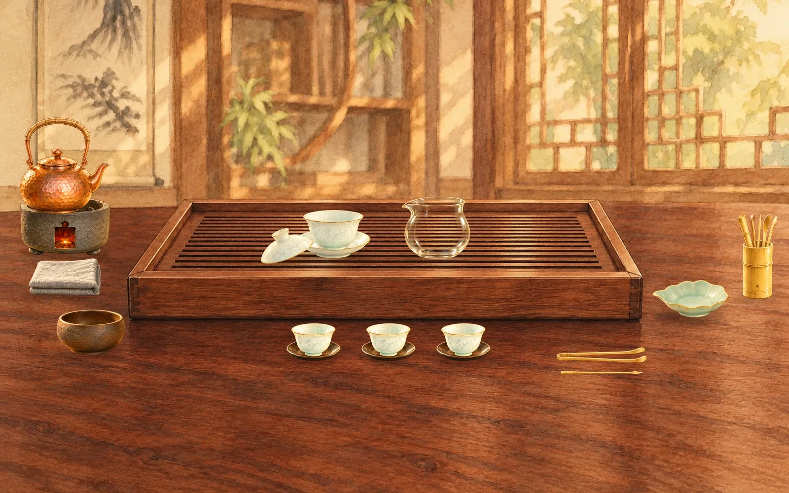
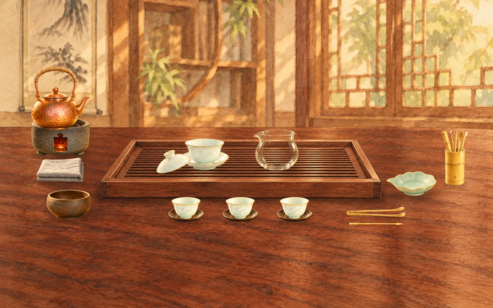
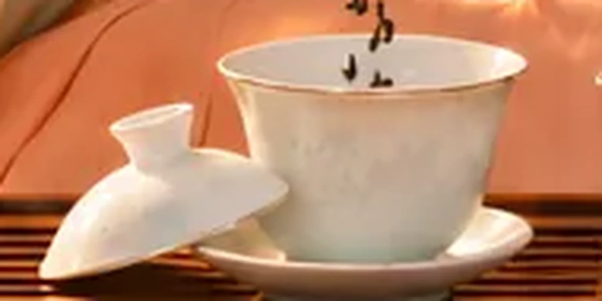
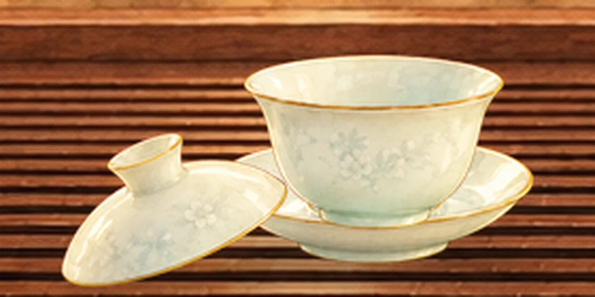

茶具重新設計・繪本版
設計稿，動畫尚未改動。全部器具按人物圖重新畫過，同一種手繪筆法。
茶席示意
茶盤闊度縮至原來八成，全部茶具放大一成，枱面器具隨茶盤向中間收窄。茶盤邊框也薄了，更接近人物圖。

比例對照
以碗托佔茶盤闊度計算：人物圖 19%，舊稿 15%，建議版 20%。公道杯用同一方法量，人物圖 17%，建議版 18%。


碗蓋擺位
開蓋後，碗蓋斜靠在碗托左邊，蓋鈕朝左上，取消之前多加的蓋置。


全套茶具
新舊對照
舊版
新版